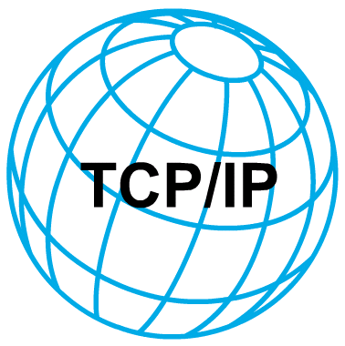

Década de los 80
Regresar a Linea de tiempo evolución de la web
Era del Ordenador Personal
1983 Creación del protocolo de Internet TCP/IP.
La familia de protocolos de internet es un conjunto de protocolos de red en los que se basa internet y que permiten la transmisión de datos entre computadoras.
